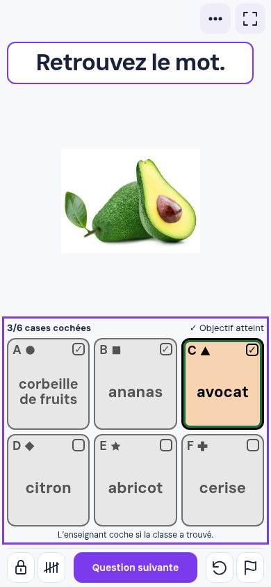
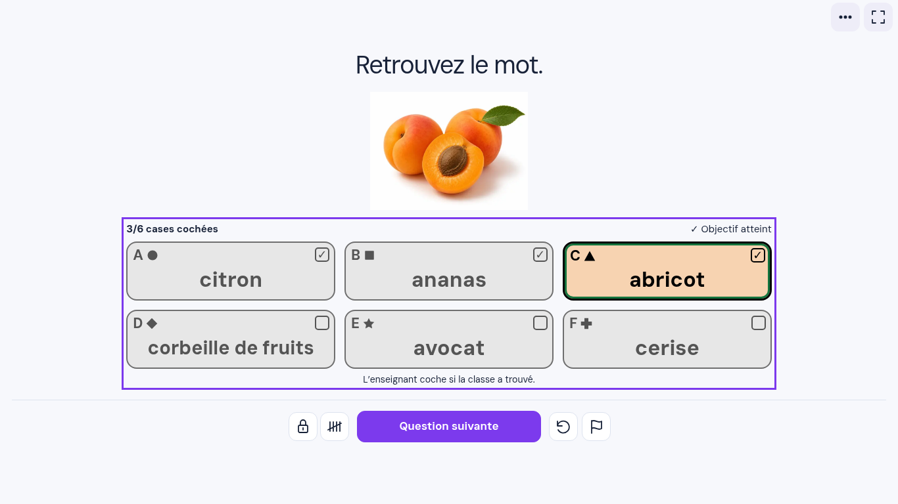
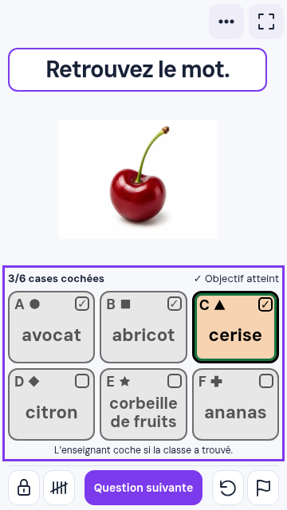

Les lettres restent fixes pendant les tirages. L’enseignant valide explicitement en Classe ; le Solo coche uniquement les bonnes réponses.



Parcours vérifiés après préchargement, hors connexion, avec reprise et bilans distincts.